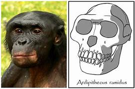

El primer homínido propiamente tal fue el Ardipithecus.
Bautizado por los arqueólogos como “Ardi”, este muy completo esqueleto fue encontrado en el 2009 en Etiopía, gracias a lo cual se pudo obtener gran información sobre uno de nuestros primeros antepasados.
El Ardipithecus era:
- Cuadrúpedo en los árboles y bípedo en tierra.
- Tenían caninos pequeños.
- Era un omnívoro del bosque. Habitó en África oriental.
- Media aproximadamente 1.20 m.
- Su capacidad craneana era de 350 cm³

Luego de unos millones de años de evolución el Ardipithecus daría paso a una nueva especie de homínido un poco más evolucionada, llamada Australopithecus. Al igual que su antecesor esta especie homínida surgió en África, pero su nicho geográfico fue mucho más amplio.
El Australopithecus era:
- Un bípedo terrestre. Habitó un territorio extenso en África.
- Media entre 1,20 a 1,40 m.
- Su capacidad craneana era de entre 380 a 500 cm³.
- Se alimentaban a base de hojas y frutas, pocas veces podía obtener carne.
- Vivió entre los 4 millones de años hasta los 2 millones de años atrás.
Surgimiento del género Homo:
Hace unos 2 millones de años apareció el istmo de Panamá, el continente se enfrió y secó, apareciendo el desierto y la sabana. Este hecho climático se considera el cambio que hizo posible la separación entre los Australopithecus y el género homo. Homo naledi.
Homo naledi:
- Era bípedo, pero también se movía en un ambiente arbóreo.
- Su estatura promedio estaba en el 1,50 m.
- Su peso era de 45 kilogramos aprox.
- Su cerebro era de unos 500 cm³, muy similar al de un Australopithecus.
- Sus manos, especialmente su pulgar, extremidades inferiores y pies eran muy similares a las humanas
Homo habilis
Surgió hace 2.5 millones de años y vivó hasta los 2 millones de años atrás. Existe evidencia arqueológica que permite pensar que algunos individuos de esta especie pudieron salir de África llegando a Asia evolucionando en otras especies como el hombre de Java, de Pekín y erectus.
El Homo habilis se caracterizaba por:
- Tener un cráneo más redondeado.
- Ser bípedo y habitar en la sabana arboleada.
- Fabricaba herramientas de piedra.
- Medía entre 1,20 a 1,40 m. y pesaba entre 40 y 50 kilogramos.
- Sus incisivos eran más grandes y posiblemente era carroñero.
- Capacidad craneana de entre unos 500 a 650 cm³.
- Vivió entre los 2,5 a los 1,4 millones de años atrás y sus restos se encuentran en Etiopía, Kenia, Tanzania y Sudáfrica.
- El Homo habilis migró en distintas direcciones provocando el surgimiento de distintas especies, las dos más importantes fueron el Homo ergaster y el Homo erectus.
Homo erectus:
Surgió hace 1,8 millones de años atrás en África y también en Asia. Su nombre se debe a que caminaban completamente erguidos. Es posible que hayan evolucionado de habilis o de ergaster. Al parecer el Homo erectus vivió hasta hace 70.000 años atrás, bastante tiempo, siendo eliminado al parecer por el Homo sapiens.
Características del Homo erectus:
- Era bípedo y caminaba completamente erguido.
- Era robusto y llegaba a medir entre 1,60 a 1,80 m.
- Su capacidad craneana partió en los 850 cm³ llegando a los 1100 cm³.
- Fabricaba herramientas de piedra. Dominó el fuego.
Homo neanderthalensis:
Surgió en Europa y partes de Asia hace unos 230.000 años y vivió hasta unos 28.000 años atrás. Esta especie era de complexión robusta apta para climas fríos, su dieta era a base de carne y vivía en grupos de 8 a 25 personas. Su capacidad craneana era igual o superior a la nuestra, es decir unos 1500 cm³, su garganta nos indica que podía hablar y tenía un idioma propio. Los neandertal fueron posiblemente la primera especie en realizar entierros, se sabe también que pintaban las cavernas donde habitaban y sabían utilizar el fuego.
Homo sapiens
Es la última especie del género homo es surgir, nació en África hace aproximadamente unos 200.000 años atrás y luego de permanecer gran parte de su existencia en dicho continente, migró a Asia, luego a Europa y finalmente a América.